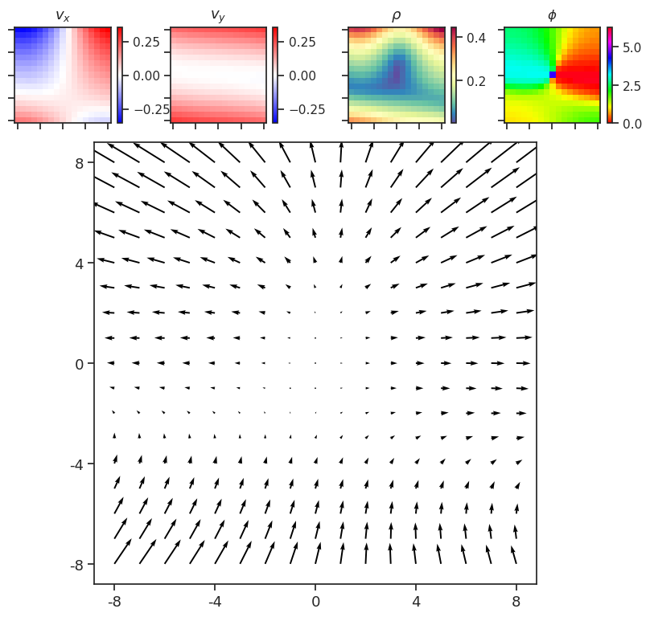
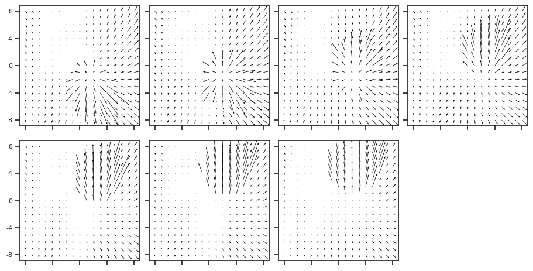

(02) Z traversal#
Motivation: Debug z traversal.
# HIDE CODE
import os, sys
from IPython.display import display
# tmp & extras dir
git_dir = os.path.join(os.environ['HOME'], 'Dropbox/git')
extras_dir = os.path.join(git_dir, 'jb-MTMST/_extras')
fig_base_dir = os.path.join(git_dir, 'jb-MTMST/figs')
tmp_dir = os.path.join(git_dir, 'jb-MTMST/tmp')
# GitHub
sys.path.insert(0, os.path.join(git_dir, '_MTMST'))
from vae.train_vae import TrainerVAE, ConfigTrainVAE
from vae.vae2d import VAE, ConfigVAE
from figures.fighelper import *
from analysis.glm import *
# warnings, tqdm, & style
warnings.filterwarnings('ignore', category=DeprecationWarning)
from rich.jupyter import print
%matplotlib inline
set_style()
from analysis.linear import mi_analysis
kws_fig = {
'transparent': True,
'bbox_inches': 'tight',
'dpi': 300,
}
Load#
# skip + x
# model_name = 'fixate1_k-32_z-20x[3,6,12]_enc(1x3)-dec(1x2)-pre(1x3)-post(1x3)'
# fit_name = 'ep160-b600-lr(0.002)_beta(0.15:0x0.5)_lamb(0.0001)_gr(250.0)_(2023_04_24,18:00)'
# skip + 0.1 * x
model_name = 'fixate1_k-32_z-14x[5,10,20]_enc(2x2)-dec(2x1)-pre(1x3)-post(1x3)'
fit_name = 'skip+0.1x_ep160-b600-lr(0.002)_beta(0.15:0x0.5)_lamb(0.0001)_gr(250.0)_(2023_05_30,09:01)'
tr, meta = load_model(
model_name=model_name,
fit_name=fit_name,
verbose=True,
device='cpu',
)
+--------------+------------+ | Module Name | Num Params | +--------------+------------+ | VAE | 39.3 Mil | | --- | --- | | stem | 320 | | pre_process | 96.0 K | | enc_tower | 22.5 Mil | | enc0 | 66.0 K | | enc_sampler | 3.0 Mil | | dec_sampler | 3.0 Mil | | expand | 287.1 K | | dec_tower | 10.3 Mil | | post_process | 40.0 K | | out | 578 | +--------------+------------+
# params: 39.3 M
Estimate prior \(\mu, \sigma\)#
%%time
x_sample, z_sample = tr.sample(int(1e6))
CPU times: user 6h 20min 36s, sys: 16min 58s, total: 6h 37min 35s
Wall time: 15min 30s
scales, lvl_ids = tr.model.latent_scales()
plot_latents_hist(z_sample, scales);
plot_latents_hist_full(z_sample, scales);
zmu = z_sample.mean(0)
zsd = z_sample.std(0)
fig, axes = create_figure(1, 3, (9, 2), layout='constrained')
sns.histplot(zmu, kde=True, color='k', label=r'$\mu$', ax=axes[0])
sns.histplot(zsd, kde=True, color='k', label=r'$\sigma$', ax=axes[1])
sns.histplot(zmu / zsd, kde=True, color='C0', label=r'$\mu\,/\,\sigma$', ax=axes[2])
axes[1].set_ylabel('')
axes[2].set_ylabel('')
for ax in axes.flat:
ax.legend()
plt.show()
fig, axes = show_opticflow(x_sample)
Traverse#
Get some random samples#
x, _ = next(iter(tr.dl_trn))
fig, _ = show_opticflow(x)
which_sample = 7
show_opticflow_full(x[which_sample]);
Check recon quality#
with torch.no_grad():
x_hat, z, q, p = tr.model(x)
fig, _ = show_opticflow(x_hat)
show_opticflow_full(x_hat[which_sample]);

Interpolate + generate#
n = 16
start_i, end_i = 0, 10
z_interp = [interp(e[start_i], e[end_i], n) for e in z]
x_interp = tr.model.generate(z_interp)
fig, _ = show_opticflow(x_interp)
Traverse + generate#
nz = tr.model.cfg.n_latent_per_group
n_groups = sum(tr.model.cfg.groups)
nz, n_groups, nz * n_groups
(14, 35, 490)
i = 86
group_i, latent_i = i // nz, i % nz
group_i, latent_i
(6, 2)
n = 16
n_sd = 10
sample_i = 6
linspan = torch.linspace(
start=zmu[i]-n_sd*zsd[i],
end=zmu[i]+n_sd*zsd[i],
steps=n,
).unsqueeze(-1).unsqueeze(-1)
z_trav = [
torch.repeat_interleave(
input=e[[sample_i]],
repeats=n,
dim=0,
) for e in z
]
z_trav[group_i][:, latent_i] = tr.to(linspan)
x_trav = tr.model.generate(z_trav)
fig, _ = show_opticflow(x_trav)
"""
n_sd = 5
for i in range(tr.model.cfg.total_latents()):
linspan = torch.linspace(
start=zmu[i]-n_sd*zsd[i],
end=zmu[i]+n_sd*zsd[i],
steps=n,
).unsqueeze(-1).unsqueeze(-1)
z_trav = [
torch.repeat_interleave(
input=e[[sample_i]],
repeats=n,
dim=0,
) for e in z
]
group_i, latent_i = i // nz, i % nz
z_trav[group_i][:, latent_i] = tr.to(linspan)
x_trav = tr.model.generate(z_trav)
print(i)
fig, _ = show_opticflow(x_trav)
"""
Load mi, identify latent#
g, g_tst, select_i, select_lbl = prep_rofl(
labels=list(LBL2TEX) + ['slf_v_norm', 'slf_v_theta', 'slf_v_phi'])
g.shape
(75000, 14)
%%time
z = tr.forward('vld', True)[0]['z']
z_tst = tr.forward('tst', True)[0]['z']
CPU times: user 6h 51min 4s, sys: 2min 4s, total: 6h 53min 8s
Wall time: 16min 46s
r = 1 - sp_dist.cdist(
np.concatenate([z, z_tst]).T,
np.concatenate([g, g_tst]).T,
metric='correlation',
)
r.shape
(490, 14)
np.min(r), np.max(r)
(-0.9421805592214101, 0.8938340402413388)
row_ind, col_ind = sp_optim.linear_sum_assignment(
cost_matrix=np.abs(r), maximize=True)
row_ind.shape, col_ind.shape
((14,), (14,))
plt.imshow(r[row_ind][:, col_ind])
plt.colorbar();
np.diag(r[row_ind][:, col_ind])
array([ 0.79168969, 0.65973407, -0.65414471, 0.82598617, -0.75276706,
0.71691408, 0.77654887, -0.63550988, -0.94218056, -0.62643789,
-0.87713688, -0.79640841, 0.78997454, -0.71661869])
best_latents = {select_lbl[i]: j for i, j in zip(col_ind, row_ind)}
best_latents = {lbl: best_latents.get(lbl) for lbl in select_lbl}
print(best_latents)
{ 'fix_x': 298, 'fix_y': 340, 'slf_v_x': 411, 'slf_v_y': 271, 'slf_v_z': 264, 'obj0_alpha_x': 74, 'obj0_alpha_y': 51, 'obj0_size': 16, 'obj0_v_x': 356, 'obj0_v_y': 211, 'obj0_v_z': 221, 'slf_v_norm': 440, 'slf_v_theta': 285, 'slf_v_phi': 299 }
j = best_latents['fix_x']
fig, ax = create_figure(1, 1, (9, 3))
ax.plot(r[j])
ax.tick_params(axis='x', rotation=-90)
ax.set(
xticks=range(len(select_lbl)),
xticklabels=select_lbl,
)
ax.grid()
plt.show()
%%time
mi = mi_analysis(
z=np.concatenate([z, z_tst]),
g=np.concatenate([g, g_tst]),
)
CPU times: user 33.5 s, sys: 17.5 s, total: 50.9 s
Wall time: 18min 36s
mi['mi_norm'].shape
(14, 490)
idx = 11
np.argsort(mi['mi'][idx])[::-1][:5], np.argsort(mi['mi_norm'][idx])[::-1][:5]
(array([202, 278, 411, 416, 271]), array([202, 440, 278, 411, 416]))
best_i = np.argmax(mi['mi'][idx])
best_i, select_lbl[idx]
(202, 'slf_v_norm')
mi['mi'][idx, best_i]
0.6844208418121003
np.argsort(mi['mi'][idx])[-2:]
array([278, 202])
l2t = {
'fix_x': r'$F_x$',
'fix_y': r'$F_y$',
'slf_v_norm': r'$\rho$',
'slf_v_theta': r'$\theta$',
'slf_v_phi': r'$\phi$',
'slf_v_x': r'$V_{self, x}$',
'slf_v_y': r'$V_{self, y}$',
'slf_v_z': r'$V_{self, z}$',
'obj0_alpha_x': r'$X_{obj}$',
'obj0_alpha_y': r'$Y_{obj}$',
'obj0_size': r'$S_{obj}$',
'obj0_v_x': r'$V_{obj, x}$',
'obj0_v_y': r'$V_{obj, y}$',
'obj0_v_z': r'$V_{obj, z}$',
}
fig, axes = create_figure(1, 2, (6, 2), sharey='row', layout='constrained')
for i in range(2):
if i == 0:
exclude = ['slf_v_norm', 'slf_v_theta', 'slf_v_phi']
else:
exclude = ['slf_v_x', 'slf_v_y', 'slf_v_z']
inds = [
i for i, lbl in
enumerate(select_lbl)
if lbl not in exclude
]
x2p = mi['mi'][:, best_i][inds]
d = 1 - entropy_normalized(x2p / sum(x2p))
axes[i].plot(x2p, marker='o')
axes[i].tick_params(axis='x', rotation=-90, labelsize=13)
axes[i].set(
xticks=range(len(inds)),
xticklabels=[l2t[select_lbl[i]] for i in inds],
)
axes[i].annotate(
text=r"$d_i \approx $" + f"{d:0.2f}",
xy=(0.09, 0.78),
xycoords='axes fraction',
color='k',
fontsize=14,
)
axes[i].grid()
axes[0].set_ylabel('MI', fontsize=15)
plt.show()
# fig.savefig(pjoin(fig_base_dir, 'polar2cart_mi.pdf'), **kws_fig)
z_both = np.concatenate([z, z_tst])
g_both = np.concatenate([g, g_tst])
z_both.shape, g_both.shape
((150000, 490), (150000, 14))
label_lists = {
'carte': ['slf_v_x', 'slf_v_y', 'slf_v_z'],
'polar': ['slf_v_norm', 'slf_v_theta', 'slf_v_phi'],
}
_y = z_both[:, best_i]
_y = sp_stats.zscore(_y)
fig, axes = create_figure(1, 6, (9.5, 1.5), sharey='all', layout='constrained')
ii = 0
for k, v in label_lists.items():
for lbl in v:
i = select_lbl.index(lbl)
_x = g_both[:, i]
# lin regress
lr = sp_stats.linregress(_x, _y)
x_min = _x.min()
x_max = _x.max()
xs = np.linspace(x_min, x_max, 1000)
ys = lr.slope * xs + lr.intercept
sns.scatterplot(
x=_x,
y=_y,
s=5,
alpha=0.05,
# bins=20,
color=get_palette()[0]['cNVAE'],
ax=axes[ii],
)
axes[ii].plot(xs, ys, color='white', ls='--', lw=1.0, alpha=0.7)
axes[ii].annotate(
text=r'$r = $' + str(np.round(lr.rvalue, 2)),
xy=(0.05 if lr.rvalue > 0 else 0.42, 0.865),
xycoords='axes fraction',
fontsize=13,
)
ii += 1
remove_ticks(axes, False)
plt.show()
for k, v in label_lists.items():
for lbl in v:
i = select_lbl.index(lbl)
r, _ = sp_stats.pearsonr(g_both[:, i], z_both[:, best_i])
print(f"{lbl}:\tr = {r:0.2f}")
slf_v_x: r = 0.00
slf_v_y: r = -0.02
slf_v_z: r = 0.00
slf_v_norm: r = -0.66
slf_v_theta: r = -0.00
slf_v_phi: r = 0.01
Traversal#
x, _ = next(iter(tr.dl_trn))
fig, _ = show_opticflow(x)
# fig.savefig(pjoin(fig_base_dir, 'samples_fixate1.pdf'), **kws_fig)
which_sample = 1
show_opticflow_full(x[which_sample]);
with torch.no_grad():
x_hat, z, q, p = tr.model(x)
show_opticflow_full(x_hat[which_sample]);
# z = torch.cat(z, dim=1).squeeze()
N groups#
nz = tr.model.cfg.n_latent_per_group
n_groups = sum(tr.model.cfg.groups)
nz, n_groups, nz * n_groups
(14, 35, 490)
Obj_y#
with torch.no_grad():
x_hat, z, q, p = tr.model(x)
idx = 6
idx, select_lbl[idx]
(6, 'obj0_alpha_y')
best_i = np.argsort(mi['mi'][idx])[-1]
best_i
85
which_group, which_latent = best_i // nz, best_i % nz
which_group, which_latent
(6, 1)
mu = q[which_group].mu[which_sample, which_latent].squeeze()
sig = q[which_group].sigma[which_sample, which_latent].squeeze()
mu, sig
(tensor(-0.4698), tensor(0.7107))
z[which_group][which_sample, which_latent].squeeze()
tensor(0.3992)
num = 8
z_trav = z.copy()
z_trav = [torch.repeat_interleave(e[[which_sample]], num, dim=0) for e in z_trav]
z_trav[which_group][:, which_latent] = torch.linspace(
mu - 5 * sig, mu + 5 * sig, num).unsqueeze(-1).unsqueeze(-1)
z_trav[which_group][:, which_latent].squeeze()
tensor([-4.0232, -3.0079, -1.9927, -0.9774, 0.0379, 1.0531, 2.0684, 3.0836])
from vae.vae2d import CombinerDec, Normal
with torch.no_grad():
idx = 0
s = tr.model.prior_ftr0.unsqueeze(0)
s = s.expand(z_trav[idx].size(0), -1, -1, -1)
for cell in tr.model.dec_tower:
if isinstance(cell, CombinerDec):
s = cell(s, tr.model.expand[idx](z_trav[idx]))
idx += 1
else:
s = cell(s)
for cell in tr.model.post_process:
s = cell(s)
x_gen = tr.model.out(s)
show_opticflow(x_gen);
show_opticflow_full(x_gen[0], figsize=(7, 6));
show_opticflow_full(x_gen[-1], figsize=(7, 6));
Obj_x#
with torch.no_grad():
x_hat, z, q, p = tr.model(x)
idx = 5
idx, select_lbl[idx]
(5, 'obj0_alpha_x')
best_i = np.argsort(mi['mi'][idx])[-1]
best_i
203
which_group, which_latent = best_i // nz, best_i % nz
which_group, which_latent
(14, 7)
mu = q[which_group].mu[which_sample, which_latent].squeeze()
sig = q[which_group].sigma[which_sample, which_latent].squeeze()
mu, sig
(tensor(-8.5291), tensor(0.0917))
z[which_group][which_sample, which_latent].squeeze()
tensor(-8.4984)
num = 8
z_trav = z.copy()
z_trav = [torch.repeat_interleave(e[[which_sample]], num, dim=0) for e in z_trav]
z_trav[which_group][:, which_latent] = torch.linspace(
mu - 3 * sig, mu + 3 * sig, num).unsqueeze(-1).unsqueeze(-1)
z_trav[which_group][:, which_latent].squeeze()
tensor([-8.8042, -8.7256, -8.6470, -8.5684, -8.4898, -8.4112, -8.3326, -8.2540])
from vae.vae2d import CombinerDec, Normal
with torch.no_grad():
idx = 0
s = tr.model.prior_ftr0.unsqueeze(0)
s = s.expand(z_trav[idx].size(0), -1, -1, -1)
for cell in tr.model.dec_tower:
if isinstance(cell, CombinerDec):
s = cell(s, tr.model.expand[idx](z_trav[idx]))
idx += 1
else:
s = cell(s)
for cell in tr.model.post_process:
s = cell(s)
x_gen = tr.model.out(s)
show_opticflow(x_gen);

Obj_size#
with torch.no_grad():
x_hat, z, q, p = tr.model(x)
idx = 7
idx, select_lbl[idx]
(7, 'obj0_size')
best_i = np.argsort(mi['mi'][idx])[-1]
best_i
16
which_group, which_latent = best_i // nz, best_i % nz
which_group, which_latent
(1, 2)
mu = q[which_group].mu[which_sample, which_latent].squeeze()
sig = q[which_group].sigma[which_sample, which_latent].squeeze()
mu, sig
(tensor(-2.1551), tensor(0.0937))
z[which_group][which_sample, which_latent].squeeze()
tensor(-2.1593)
num = 8
z_trav = z.copy()
z_trav = [torch.repeat_interleave(e[[which_sample]], num, dim=0) for e in z_trav]
z_trav[which_group][:, which_latent] = torch.linspace(
mu - 3 * sig, mu + 3 * sig, num).unsqueeze(-1).unsqueeze(-1)
z_trav[which_group][:, which_latent].squeeze()
tensor([-2.4364, -2.3560, -2.2757, -2.1953, -2.1150, -2.0346, -1.9543, -1.8739])
from vae.vae2d import CombinerDec, Normal
with torch.no_grad():
idx = 0
s = tr.model.prior_ftr0.unsqueeze(0)
s = s.expand(z_trav[idx].size(0), -1, -1, -1)
for cell in tr.model.dec_tower:
if isinstance(cell, CombinerDec):
s = cell(s, tr.model.expand[idx](z_trav[idx]))
idx += 1
else:
s = cell(s)
for cell in tr.model.post_process:
s = cell(s)
x_gen = tr.model.out(s)
show_opticflow(x_gen);

Self norm#
with torch.no_grad():
x_hat, z, q, p = tr.model(x)
idx = 11
idx, select_lbl[idx]
(11, 'slf_v_norm')
best_i = np.argsort(mi['mi'][idx])[-1]
best_i
202
which_group, which_latent = best_i // nz, best_i % nz
which_group, which_latent
(14, 6)
mu = q[which_group].mu[which_sample, which_latent].squeeze()
sig = q[which_group].sigma[which_sample, which_latent].squeeze()
mu, sig
(tensor(-2.8928), tensor(1.7264))
z[which_group][which_sample, which_latent].squeeze()
tensor(-4.8301)
num = 8
z_trav = z.copy()
z_trav = [torch.repeat_interleave(e[[which_sample]], num, dim=0) for e in z_trav]
z_trav[which_group][:, which_latent] = torch.linspace(
mu - 3 * sig, mu + 3 * sig, num).unsqueeze(-1).unsqueeze(-1)
z_trav[which_group][:, which_latent].squeeze()
tensor([-8.0719, -6.5921, -5.1124, -3.6326, -2.1529, -0.6731, 0.8066, 2.2864])
from vae.vae2d import CombinerDec, Normal
with torch.no_grad():
idx = 0
s = tr.model.prior_ftr0.unsqueeze(0)
s = s.expand(z_trav[idx].size(0), -1, -1, -1)
for cell in tr.model.dec_tower:
if isinstance(cell, CombinerDec):
s = cell(s, tr.model.expand[idx](z_trav[idx]))
idx += 1
else:
s = cell(s)
for cell in tr.model.post_process:
s = cell(s)
x_gen = tr.model.out(s)
show_opticflow(x_gen);
Final, generate#
with torch.no_grad():
x_hat, z, q, p = tr.model(x)
select_lbl[6]
'obj0_alpha_y'
best_i = np.argsort(mi['mi'][6])[-1]
best_i
85
which_group, which_latent = best_i // 14, best_i % 14
which_group, which_latent
(6, 1)
which_sample = 11
mu = q[which_group].mu[which_sample, which_latent].squeeze()
sig = q[which_group].sigma[which_sample, which_latent].squeeze()
mu, sig
(tensor(0.4096), tensor(0.8482))
z[which_group][which_sample, which_latent].squeeze()
tensor(1.4538)
use_this = torch.linspace(mu - 6 * sig, mu + 3 * sig, num).unsqueeze(-1).unsqueeze(-1)
num = 7
z_trav = z.copy()
z_trav = [torch.repeat_interleave(e[[which_sample]], num, dim=0) for e in z_trav]
z_trav[which_group][:, which_latent] = use_this
---------------------------------------------------------------------------
RuntimeError Traceback (most recent call last)
Cell In[219], line 4
2 z_trav = z.copy()
3 z_trav = [torch.repeat_interleave(e[[which_sample]], num, dim=0) for e in z_trav]
----> 4 z_trav[which_group][:, which_latent] = use_this
RuntimeError: The expanded size of the tensor (7) must match the existing size (8) at non-singleton dimension 0. Target sizes: [7, 1, 1]. Tensor sizes: [8, 1, 1]
z_trav[which_group][:, which_latent].squeeze()
tensor([-2.5185, -1.8464, -1.1742, -0.5021, 0.1701, 0.8422, 1.5144],
device='cuda:0')
with torch.no_grad():
idx = 0
s = self.prior_ftr0.unsqueeze(0)
s = s.expand(z_trav[idx].size(0), -1, -1, -1)
for cell in self.dec_tower:
if isinstance(cell, CombinerDec):
s = cell(s, self.expand[idx](z_trav[idx]))
idx += 1
else:
s = cell(s)
for cell in self.post_process:
s = cell(s)
x_gen = self.out(s)
show_opticflow(x_gen);

num = 7
x_gen_all = []
for i in range(num+2):
which_sample = i + 11
z_trav = z.copy()
z_trav = [torch.repeat_interleave(e[[which_sample]], num, dim=0) for e in z_trav]
z_trav[which_group][:, which_latent] = use_this
with torch.no_grad():
idx = 0
s = self.prior_ftr0.unsqueeze(0)
s = s.expand(z_trav[idx].size(0), -1, -1, -1)
for cell in self.dec_tower:
if isinstance(cell, CombinerDec):
s = cell(s, self.expand[idx](z_trav[idx]))
idx += 1
else:
s = cell(s)
for cell in self.post_process:
s = cell(s)
x_gen = self.out(s)
x_gen_all.append(x_gen)
x_gen_all = torch.stack(x_gen_all)
x_gen_all.shape
torch.Size([9, 7, 2, 17, 17])
fig, axes = show_opticflow_row(x_gen_all, figsize=(9.5, 12.4), display=False)
for i in range(7):
axes[0, i].set_title(r"$z_2 = $" + f"{to_np(use_this)[i].item():0.2f}", fontsize=12)
for j in range(9):
axes[j, 0].set_ylabel(f"{j}", fontsize=11)
display(fig)
fig.savefig(pjoin(fig_base_dir, 'traverse_objy.pdf'), **kws_fig)